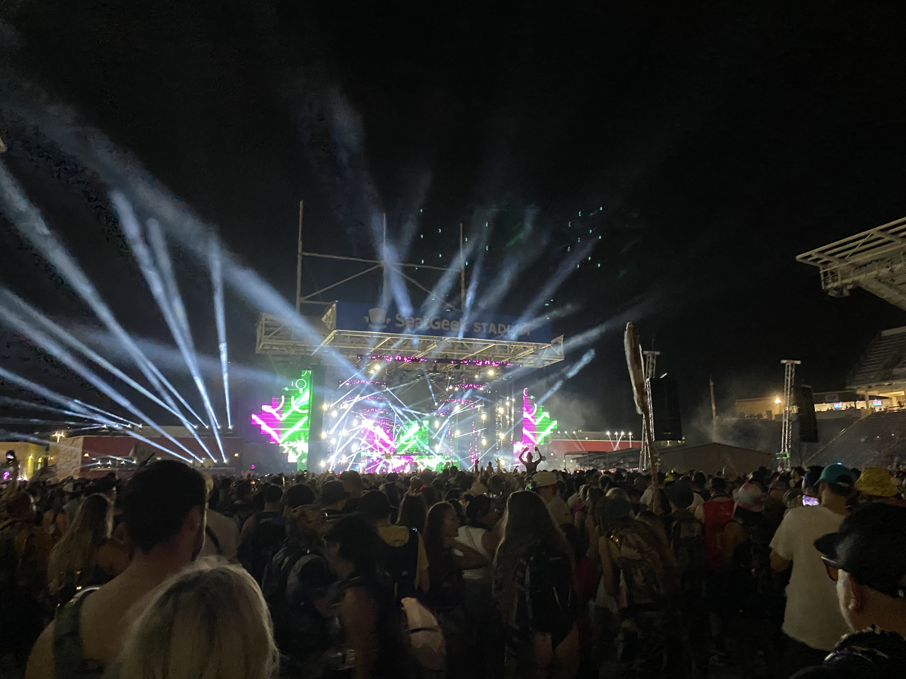
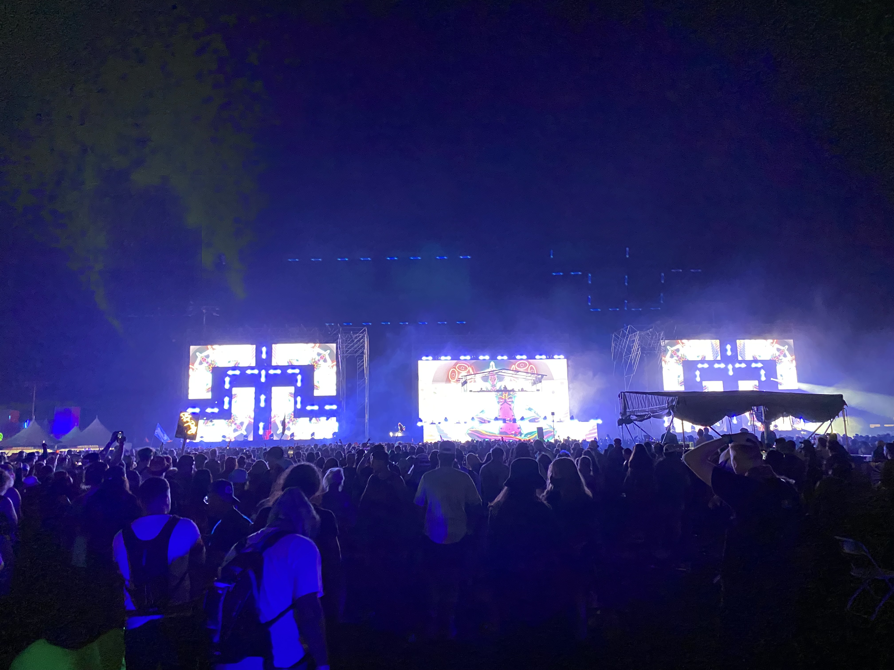

Let's talk costumes
I love getting dressed up and expressing myself, having that freedom to be uniquely me. Our festival crew plans out each day and we pick an overal theme and then make it our own.
| Day | Theme |
|---|---|
| Friday | Galaxy |
| Saturday | Black/Green |
| Sunday | Neon |


The scene
North Coast really put together something special this year. 3 unique stages, spaced out perfectly, allowing so much room for everyone to spread out, dance, vibe, while limiting any carryover sound from surrounding stages. That's hard to do, considering there were 3 artists playing at a time at each of the main stages, plus a few smaller stages hosting various lesser known artists. The sound systems were booming, the graphics, lasers and lights were mesmerizing, and the nightime fireworks marked the end of a day well spent. All the fun props, art exhibits and interactive spaces made for a lot of fun exploring as well.  
All about the music
The real reason to go, of course, is the music. EDM has been a favorite of mine since as long as I can remember. The music speaks to my soul, moves my body, and has facilitated connections with some of the best people I've ever met. I got to check a couple big names off my bucket list this year: Zeds Dead, Ganja White Knight, Alison Wonderland, ATLiens, and Big Gigantic. Got to see some of my favorites as well, like Liquid Stranger and Black Tiger Sex Machine. Each day of the festival had a lineup that left nothing to be desired. I danced till my knees hurt and smiled till my face hurt.